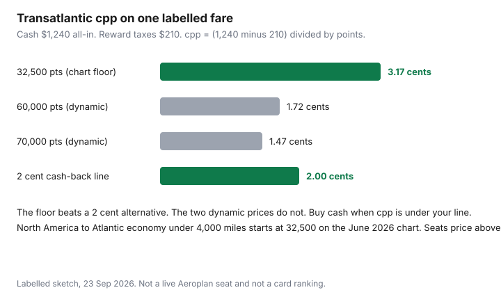

Travel · Canada
Europe from Canada Without Peak Summer Prices: Shoulder-Season Budget Playbook
Peak summer is a habit as much as a price. A household in Canada asks for two weeks in Europe, the calendar offers July, and the quote comes back as if the Atlantic had a cover charge. The weeks on either side of that habit, and the cities you fly into and out of, move the total more than another hour of scrolling the same July dates.
This is a Canada-origin playbook: Toronto, Montreal, Vancouver, Calgary, Ottawa, and the school year those cities actually run. It is not a U.S. East Coast guide that assumes a short flight to London. The month pattern sits on the shoulder-season calendar. The day-count for buying the ticket sits on the booking-window guide. Points math below uses the same cents-per-point rule as the Aeroplan framework. None of this ranks credit cards.
Disclosure: Flight comparison sites and hotel booking sites are offer types. Saving Optimizer may earn a commission if we later add partner links. We do not claim an airline, rail, or hotel partnership. Fares and euro conversions below are labelled sketches. Education only.
Key takeaways
- With teens in school, the usable shoulder is late June and late August. September is the cheap international month in Expedia’s 2026 Canada data, and it is often unavailable for a two-week family trip.
- An open-jaw or a secondary airport counts only after ground transport. A cheaper fare that needs a two-hour bus can lose.
- A 2026 adult second-class Eurail Global Pass for 7 days in 1 month is €381 before reservations, about €54 a travel day. Point-to-point wins when your dated tickets plus the pass’s reservation fees say so.
- Paris tourist tax from 1 January 2026 is €5.53 per adult per night in a 3-star, all additional taxes included. Unclassified apartments use a percent, capped at €15.93.
- On a labelled $1,240 transatlantic fare, 32,500 points is about 3.17 cents and 60,000 points is about 1.72 cents after $210 of reward taxes. Buy cash when cpp is under your line.
- Schengen entry, on travel.gc.ca, wants a passport valid at least three months after you plan to leave the area. Renew before you pay a non-refundable fare.
Best value months from Canadian gateways after school constraints
Expedia’s 2026 Canada Air Hacks, the same February release used on the booking-window page, put September about 26% below December for international trips, on the order of $160 CAD a ticket. That is one input. It is not a reason to pull a 16-year-old out of school for two weeks because an average fare moved.
Sort the household first.
- Teens, and you need more than a long weekend. The long break is late June through August. Inside that break, mid-July to early August is the peak you should have to justify. Late June, the week classes end, and the second half of August, before the Tuesday school starts, are the edges. They are not as cheap as a child-free September. They are the shoulder you can actually board. March break is one week, dates differ by province and board, and it prices like a holiday. Christmas prices like Christmas.
- Adults travelling without the school calendar. September and October are the value months: the Expedia signal, thinner crowds than July, and lodging that is no longer on a school-holiday rate. May, before the summer ramp, is the other window. November can be cheaper and darker. Price it if you like cities more than long evenings outside.
- A split household. Two adults in October, and a shorter edge-of-summer week with the teens, often beats one July trip that tries to satisfy both. Write that down before you look at fares. The family per-day sheet is how you compare a week for four with a week for two.
Gateway is the second sort. Montreal and Toronto have the dense Europe schedules. Vancouver’s flight is longer and sometimes the better fare to a city that lines up with a Pacific departure. Calgary and Ottawa have fewer nonstops; a connection is fine when it is one ticket and a bad idea when it is two. Secondary Canadian airports (Hamilton, Waterloo, Abbotsford) are already covered as a ground-cost test in the booking-window guide. Use them only after the ride to the airport is in the total.
Passport validity is a month constraint people notice at check-in. Travel.gc.ca’s France page, and its Europe page, say a regular Canadian passport must be valid at least three months after the date you expect to leave the Schengen area. Visa-free stays are up to 90 days in any 180-day period, cumulative across Schengen countries. The same Europe page describes ETIAS as something Canadians will need once it is in place, tied to the passport. Do not budget a fee on this page until that page says the charge is live. If the passport fails the three-month test, the renewal checklist comes before the fare.
Open-jaw and alternate European airports that cut transatlantic fares
A round trip into one city and a budget flight onward is two products stapled together. An open-jaw flies you into the first city and home from the last. It saves money only when it costs less than the round trip plus the positioning flight it replaces.
| Build | Cash | What you still pay in Europe |
|---|---|---|
| Round trip YYZ–CDG, plus a cheap flight onward to Lisbon and back to Paris for the flight home | $780 + $200 = $980 | You have already bought the positioning |
| Open-jaw: into Lisbon, home from Rome, if that is the trip | $910 | The trains between cities. No positioning flight. |
| Open-jaw that only saves the fare and strands you | Looks lower on the first screen | A $90 flight you still have to buy. Net loss if $90 is more than the fare gap. |
In that sketch the open-jaw is $130 more than the Paris round trip and $70 less than the round trip plus the $200 hop. If the hop was $90, the open-jaw is the dearer build. Price both on the same day. One-way transatlantic fares are often a poor third option; test them anyway so you are not assuming the open-jaw is the only way to avoid a backtrack.
Alternate airports are the same test with a bus attached. Search the fare, then the train or coach to the neighbourhood you are sleeping in, then the hour of night you would rather not be on that coach.
- London: Heathrow against Gatwick, Stansted, and Luton. A fare gap under the rail fare into the city is not a gap.
- Paris: Charles de Gaulle and Orly against Beauvais. Beauvais is a bus ride, not a Metro stop.
- Frankfurt: the main airport against Hahn.
- Milan: Malpensa against Linate and Bergamo.
- Rome: Fiumicino against Ciampino.
A third city can be the alternate airport. Flying into Brussels or Amsterdam and training to the city you wanted is rational when the transatlantic fare gap survives the train. It is a hobby when you add a night you did not want. Bags matter on the cheap intra-Europe ticket the same way they matter on a Basic fare at home. Read the receipt.
Rail passes vs point-to-point after city-pair math
Canadians buy Eurail. Interrail is the product for residents of Europe. Eurail’s own description: a Global Pass covers trains in its network, not trams, metros, or most buses, and seat reservations are extra on high-speed trains, night trains, and other routes that require one. A pass that looks cheaper than three tickets and then needs a €30 reservation on two of them was not compared fairly.
Adult second-class Global Pass prices below are the 2026 retail figures in Eurail’s price file effective 1 January 2026 (adult, ages 28–59). Youth under 28 and seniors 60 and over are different prices. Child passes for ages 4–11 are issued at no fare with an adult pass on Eurail’s terms; children under 4 travel without a pass if they do not need a reserved seat. Confirm the age bands the day you buy. Sales move the euro figure. Use the price on eurail.com, not a memory of this table.
| Pass | Adult, 2nd class | Before reservations |
|---|---|---|
| 4 travel days in 1 month | €283 | €70.75 per travel day |
| 7 travel days in 1 month | €381 | €54.43 per travel day |
| 10 travel days in 2 months | €447 | €44.70 per travel day |
At a placeholder 1.50 CAD per EUR (not a live rate; your card’s rate plus the FX method is the real one), €381 is about $572 CAD before reservations. Replace 1.50 before you treat that as a budget.
The city-pair test is short. List every train you will ride. Price a dated point-to-point ticket for each. On the pass side, add the reservation you must buy for that train. The pass wins when the ticket sum is higher than the pass plus reservations, or when you will not know the dates and you are paying for that flexibility on purpose. A fixed long weekend of two trains booked a month ahead usually loses to point-to-point. A two-week trip with five longer rides, chosen late, can win. London–Paris on Eurostar is the route where the reservation, not the pass, is the number that surprises people. Price it. Do not assume it is included.
Round method numbers, not live SNCF fares: three advance tickets at €40 are €120, and a €381 pass loses. Five tickets at €90 are €450, and the pass can win if reservations stay small. Write your five. A pass you activate “so the trip feels flexible” and then use twice is the expensive way to buy two tickets.
Lodging: hotels vs apartments with tourist taxes included
The rate on the first screen is not the rate you pay. European cities add a tourist tax per person per night, sometimes inside the prepaid total, sometimes collected at the desk in cash or on a card. Compare checkout totals, the same way the Canadian lodging guide refuses to compare a cleaning fee with a room rate. Booking direct versus a portal, when a loyalty night is the point, is the direct-versus-portal guide. A Europe trip that will never use the points can ignore the portal gap and chase the all-in euro price.
Paris is the worked example because the 2026 rates are published in one place. Service-Public, for stays from 1 January 2026, lists the tax per adult per night with the departmental and regional add-ons already in the total: €5.53 in a 3-star, €8.45 in a 4-star, €11.70 in a 5-star. Unclassified lodging, which is where a lot of apartments sit, is 5% of the pre-tax nightly cost per person, plus the additional taxes, capped at €15.93. The tax follows the rates in force on the night you stay, not the night you reserved.
| Lodging | Tax basis | Four nights, two adults |
|---|---|---|
| 3-star hotel | €5.53 per adult per night | €44.24 |
| 4-star hotel | €8.45 per adult per night | €67.60 |
| Unclassified apartment | Percent of the pre-tax night, capped at €15.93 per adult | Run the city’s calculator. A four-night cap at the ceiling is €127.44. |
At the placeholder 1.50, €44 is about $66 CAD. That will not decide the trip. An unclassified apartment that looks €40 a night cheaper and then adds a capped tax, a cleaning fee, and a linen fee can lose to the 3-star whose tax was already on the screen. Rome, Amsterdam, Barcelona, and Lisbon publish their own amounts. One city’s rate is not the continent’s. Add the tax to both the hotel column and the apartment column before you call the apartment the frugal choice. A kitchen saves money in the food section, not by magic in the tax section.
Daily food and museum pass budgets in CAD
Food is the line households copy from a blog and then blow. Write three daily totals for the pair, in euros, then convert. The figures below are a planning sketch, not a receipt from a particular city.
| Pattern | Euro sketch, the pair | CAD at 1.50 | Seven days |
|---|---|---|---|
| Bakery, market, one casual meal | €45 | about $68 | about $475 |
| Mixed, sit-down once a day | €70 | about $105 | about $735 |
| Restaurants for most meals | €120 | about $180 | about $1,260 |
The gap between the first and third row is about $785 CAD over a week, which is a flight. Choose the row you will live, not the row that makes the spreadsheet look like a deal. A kitchen in the apartment earns its fee only on the days you use it. One restaurant you picked beats a city card’s “free” tasting menu you will not attend.
Museum passes fail the same way resort credits fail. Value is the tickets you would have bought, not the list of doors the card opens. Sketch: two adults, three museums, €20 a ticket, is €120, about $180 CAD at 1.50. A city card at €90 a person is €180 before you have entered anything. It wins only if you will use more than €90 of entries each, inside the card’s hours, without buying a timed ticket the card does not cover. Many popular museums still need a reserved time. The card is not the reservation. Price the two or three rooms you would be sorry to miss. Pay for those. Let the fourth brochure go. That is the same rule as one paid outing a day on the family guide.
Points vs cash for the transatlantic leg using the cpp framework
Keep one method. Cents per point = (all-in cash fare − taxes and fees you still pay on the reward) ÷ points. Dividing the whole cash fare by points, and ignoring reward taxes, makes the points look richer than they are. The full walk-through, including the June 2026 chart as a ceiling check, is the Aeroplan page. This section only runs it on the flight that dominates a Europe trip.
Air Canada’s chart for tickets booked or reissued on or after 1 June 2026 starts North America–Atlantic economy under 4,000 miles at 32,500 points. “Starting at” is the floor. Dynamic prices sit on that floor and go up. A seat at 32,500 is the best published case, not the Tuesday you need.
| Points asked | Cash minus reward taxes | Cents per point | Against a 2 cent alternative |
|---|---|---|---|
| 32,500 (chart floor) | $1,030 | about 3.17 | Points win. You still pay the $210. |
| 60,000 | $1,030 | about 1.72 | Buy the cash ticket if 2 cents is your line. |
| 70,000 | $1,030 | about 1.47 | Buy cash. The floor was the only rich price. |

Two adults are not one redemption unless you find two seats. A household that spends 70,000 points each, twice, to feel thrifty has spent a large balance to lose to a cash fare. If you do not have a cash-back alternative, one cent is the floor the Aeroplan guide already uses: below that, pay cash. Shoulder-season cash fares are exactly when points look worse, because the cash number in the numerator shrank. Run cpp again in late August versus mid-July. Do not assume the July redemption is still the rich one when the cash fare has fallen.
Taxes on the reward are part of the Europe budget, in CAD, the week you ticket. They are not “free because it was points.” A $210 charge times two people is $420 before anyone has booked a hotel. Put it on the same sheet as the tourist tax and the food row you actually chose.
Sources & date stamps
- Expedia.ca 2026 Air Hacks and the February 2026 Canada release — September about 26% below December on international trips, on the order of $160 CAD. Used as one input, 23 Sep 2026. Booking windows are on the companion guide.
- Global Affairs Canada, travel.gc.ca France and “Travelling to Europe” — passport valid at least three months after you leave Schengen; 90 days in any 180; ETIAS described as applying once it is in place. Used 23 Sep 2026.
- Eurail 2026 Global Pass adult second-class prices effective 1 January 2026 — €283, €381, and €447 for the flexi passes cited. Reservations extra. Confirm on eurail.com the day you buy.
- Service-Public and the City of Paris tourist-tax pages — 3-star €5.53 and 4-star €8.45 per adult per night from 1 January 2026, additionals included; unclassified percent capped at €15.93. Used 23 Sep 2026.
- Air Canada Aeroplan reward chart for bookings on or after 1 June 2026 — North America–Atlantic economy under 4,000 miles from 32,500 points. The cpp arithmetic is a labelled sketch, not a live seat.
Frequently asked questions
When is Europe cheapest from Canada if we have teenagers in school?
September is the cheap international month in Expedia’s 2026 Canada figures, and it is often the month a high-school household cannot use for two weeks. With teens, the workable shoulder is the edge of summer: late June, just after classes, and the last half of August, before school returns. Mid-July through early August is the peak you are trying not to book by default. March break is a short, expensive window, not a shoulder.
Does an open-jaw ticket save money from Canada?
Only after you subtract the flight it replaces. In the labelled sketch, an open-jaw that cost $130 more than a round trip and removed a $200 positioning flight saved $70, before the train you still ride. If that positioning flight was $90, the open-jaw lost. Price your cities. Alternate airports only count after the train or bus into town.
Is a Eurail pass cheaper than point-to-point tickets?
Not for a short list of trains you can book ahead. A 2026 adult second-class Global Pass for 7 travel days in 1 month is €381 before seat reservations. That is about €54 a travel day before those fees. Add compulsory reservations on high-speed, night, and Eurostar trains, then compare with dated point-to-point fares. Canadians buy Eurail, not Interrail.
How much is the Paris tourist tax in 2026?
From 1 January 2026, Service-Public lists the all-in tax per adult per night at €5.53 for a 3-star and €8.45 for a 4-star, including the additional taxes. Unclassified lodging is 5 percent of the pre-tax nightly cost per person plus those additionals, capped at €15.93. Two adults for four nights in a 3-star is about €44 before you argue about the room. Other cities are not Paris.
When should I spend Aeroplan points on a flight to Europe?
When cents per point beat your cash alternative. On a labelled $1,240 fare with $210 of reward taxes, 32,500 points is about 3.17 cents and 60,000 points is about 1.72 cents. The June 2026 chart floor for North America to Atlantic economy under 4,000 miles is 32,500. Dynamic prices sit at or above it. If cpp is under your cash-back line, buy the ticket. This is not a card ranking.